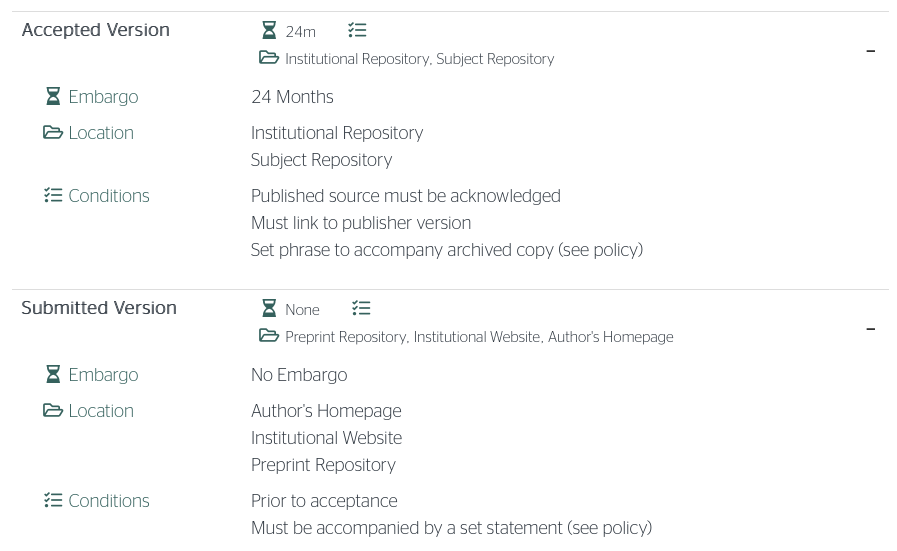

This post first appeared on the #CrimComm Blog
You’re a criminal-justice researcher and you’ve just published an article in a top journal. It was a lot of work: you spent months securing ethical approval, collecting data or negotiating access to secondary data, completing the analysis, writing up the results and responding to reviews. You are rightly proud of the result. But – by default and without meaning to – you have probably locked your paper away behind a journal paywall so that many potential readers simply can’t see it.
While researchers at universities in western countries typically have electronic access to journals, many others who could benefit from criminal-justice research do not. Universities in developing countries may have very few library resources, while access to journals in police and local-government agencies is typically extremely limited, meaning the increasing band of criminal-justice pracademics (who want to make use of research and have the skills to do so) are often left in the dark.
The lack of public access to criminal-justice research is particularly worrying because so much of it is relevant to practitioners and policy makers. Imagine a police captain who wants to know what effects the introduction of body-worn cameras is likely to have, or who has to decide whether to authorize a a ‘scared straight’ program suggested by one of her officers. Not having access to good-quality research could easily lead to decisions that harm public safety or waste scarce resources.
Fortunately, you almost certainly have the right to release a version of your paper online for anyone to read, completely free. This is referred to as self-archiving or as green open access, to distinguish it from gold open access in which authors pay an article processing charge (APC) to make the article free on the journal website.
All the main publishers of criminology journals allow authors to post the pre-print or submitted version of an article (the version originally submitted to the journal) on authors’ personal and university websites, as well as specialist websites known as pre-print servers. Most publishers also allow authors to post the post-print or accepted version (the final version submitted to the journal after any revisions), although sometimes with more restrictions. As part of their open-access policies, publishers also do not consider self-archiving of pre- or post-prints as prior publication. There are other benefits to self-archiving, too: releasing a pre-print is associated with more attention and citations for the peer-reviewed article.
Even though authors can release their articles online, recent research shows only about a quarter of articles in criminology journals are open access (either green or gold). This means that in the past three years, over 9,000 criminology articles that could have been open to the public were instead locked away.
You might be worried about releasing your article publicly before it has been peer reviewed. What if you’ve made a mistake? You can decide not to post the submitted version online, choosing instead to post the accepted version once it is available. But doing this means your research stays hidden during the review and revision process. If a practitioner needs to make a decision now about a policy or practice, they may prefer to have access to your research (perhaps with a note explaining it has not yet been reviewed) rather than have to make the decision blind, only to see your research released a few months later when it no longer matters to them. It’s also worth remembering that the peer-review process is not perfect. Many mistakes (and worse) have been published despite being read by multiple reviewers, so authors should not treat peer review as the only determinant of research quality. I post both the submitted and accepted versions of my articles, trusting readers to understand that all research should be read critically.
The easiest way to discover your self-archiving rights under a particular journal policy is to search the Sherpa Romeo database, which summarizes policies from more than 4,000 publishers. Take the journal Policing, published by Oxford University Press. Searching on Sherpa Romeo shows:

In this case you can:
- post the submitted (pre-print) version on your own website, an ‘institutional repository’ (your university website) or a ‘subject repository’ (a pre-print server),
- post the accepted (post-print) version on your university website or a pre-print repository, but only 24 months after publication (known as an embargo period).
In both cases, once the article is published you must add a note to the pre-/post-print linking to the published version.
When it comes to the question of where to post your paper, remember the objective is to get your research into the hands of those who need it. The more widely you distribute your article, the easier it will be for people to find. I post my papers on my own website, the institutional repository run by my university and a pre-print server called SocArXiv that hosts papers from across the social sciences. Other options include Academia.edu and ResearchGate, although there are reasons you might not want to use them. I use SocArXiv because it is indexed by search engines such as Google Scholar. SocArXiv (and some other pre-print servers) also assign a digital object identifier (DOI) to your article, making it easier for people to cite it even before the final version is published. Posting an article on a pre-print server is straightforward and usually takes only a few minutes.
When posting your paper online, you will be asked to choose a license under which people can re-use it. By default, you own the copyright to any work you post online, but this may restrict others from using your paper by (for example) sending it to a mailing list or hosting a copy for students on their university online learning portal. You can make it easier for people to share your content with others by using an open license, which gives people re-use rights. For example, the Creative Commons Attribution License allows people to re-use your work for any purpose, as long as they cite you as the author.
Self archiving can be useful even if you intend to eventually publish your article using gold open access. Gold open access makes it very easy for readers to find an article, but it is only available to authors (or institutions) who can afford the high prices of APCs. Gold open access also keeps research hidden throughout the peer-review and publishing process. If you plan to make your article gold open access by paying an APC, consider also posting the pre-print version of the article at the time you submit to the journal. If you are a research leader, be it a doctoral adviser or a head of department, you can also encourage self-archiving by establishing it as the norm among your team.
Open-access publishing isn’t enough to ensure your article has an impact among practitioners. You can also present your work at practitioner conferences, publish summaries of the results in practitioner-focused magazines or websites, discuss your findings on social media or host a webinar. But self archiving to make your work available to practitioners and other readers who don’t have access to journal subscriptions is a great first step.
Thanks to Dr Lily Gleicher and Prof Peter Moskos for their comments on an earlier draft of this post.